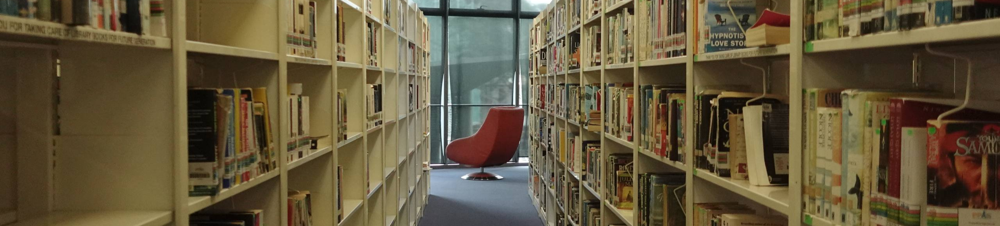
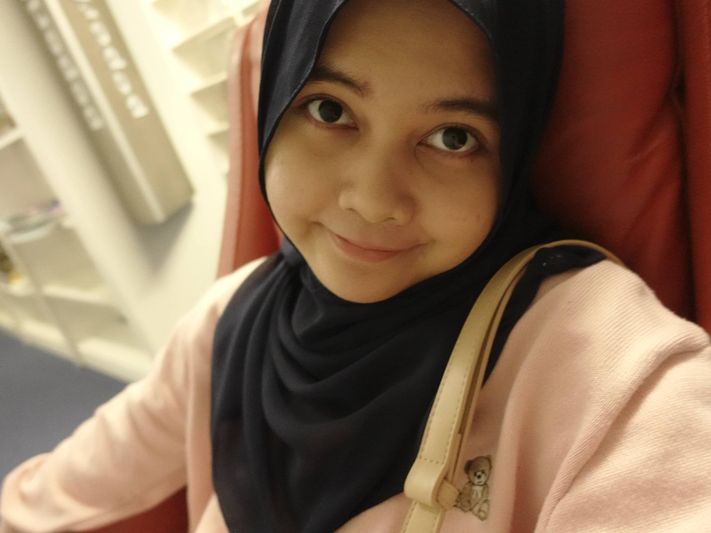
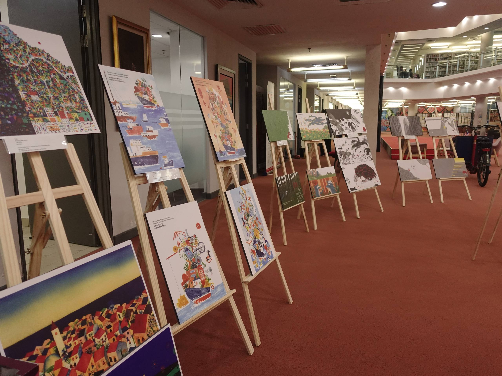
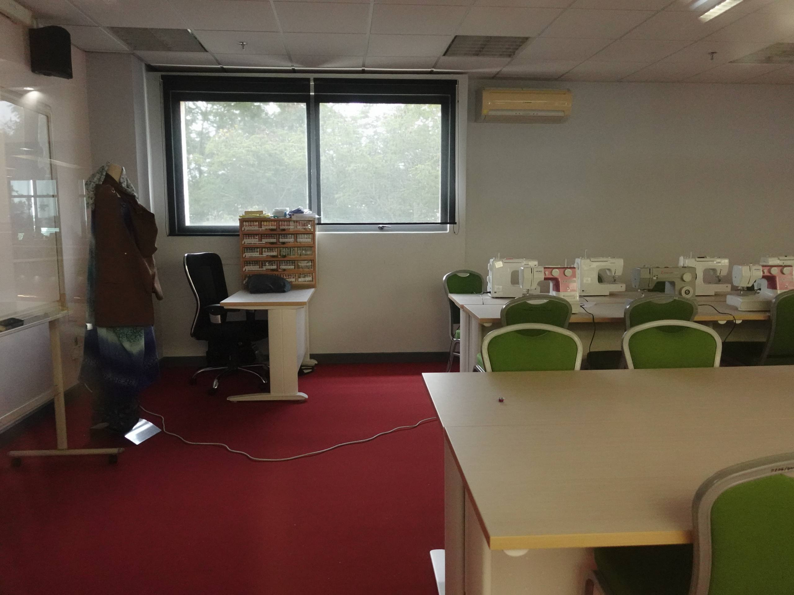
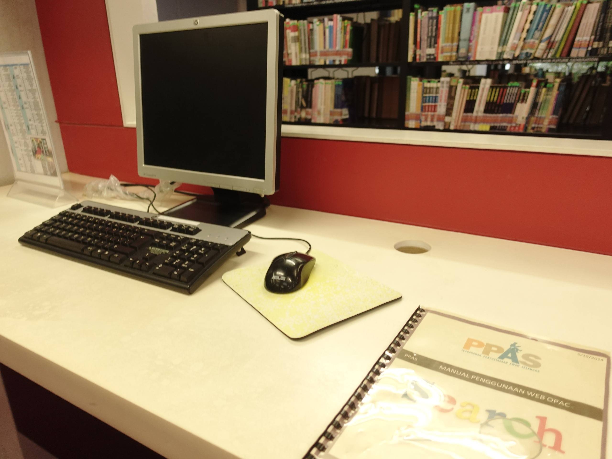

|
A Library That Everyone Talks About
This time, my library journey brought me to Raja Tun Uda Library (RATU) in Shah Alam. Since it is not too far from where I live, my friend and I decided to ride a scooter there. It made the journey feel more enjoyable, and before we knew it, we had finally arrived at one of the most talked about public libraries in Malaysia. I was excited to see if it really lived up to all the praise I do heard. Where is it?Located in Shah Alam, Raja Tun Uda Library is one of Selangor's most well known public libraries and is easily accessible by car or public transportation. First Stop: The Entrance
After park our scooter, I noticed a buggy service waiting to transport visitors from the parking area to the main entrance. I thought it was a really nice idea, especially for families with young children, senior citizens, or anyone who simply wanted a more comfortable walk to the library! A Quick Library TourSometimes, photos aren't enough to capture the atmosphere of a place. That's why I recorded this short vlog, so you can get a better feel of Raja Tun Uda Library before we explore it section by section! Stepping Inside!
I quickly realised that if I walked too fast, I do probably miss a lot of things. So instead of rushing upstairs, I slowed down and explored the entrance area first... That's when I noticed the comfortable seating, colourful event posters, and a handy floor directory that helped visitors navigate the library! It was a small reminder that sometimes, taking your time lets you appreciate a place even more. While looking around, I noticed several posters promoting upcoming workshops and educational programmes. Many of them were specially designed for children, which explained why I saw so many families spending quality time together during my visit. It made the library feel lively and welcoming, rather than being just a quiet place to read. From Floor to Floor
Looking up from the ground floor, I finally realised just how massive this library is. The open concept design allows visitors to see all six levels at once, creating a view that's hard to ignore. Before making my way upstairs, I removed my shoes like everyone else. The library even provides reusable shoe bags if you prefer to carry your shoes with you. I thought this was a simple yet thoughtful idea, as it helps keep the library clean despite the large number of visitors every day.
One thing that immediately caught my eye was the row of Apple iMacs available for visitors. Some people were busy doing their assignments, while a few children were enjoying games on the computers. The study spaces were also spread throughout the floor, so there was no need to worry about finding a place to sit. The Vibes
As I made my way to the upper floors, I started to notice a change in the atmosphere. The higher I went, the quieter it became. Unlike the lower levels where families and children gathered, these floors felt much more peaceful, making them perfect for reading, studying, or simply enjoying some quiet time. I found myself slowing down and appreciating how calm everything felt. The Happiest Corner
By the time I finished exploring the upper floors, I was officially done climbing. So yes... I took the lift back down! The Children's Library known as Creative Zone is located on the ground floor beside the Information Counter. As soon as I stepped in, the atmosphere changed instantly. It was full of bright colours, smiling families, and children happily discovering books, making the space feel warm and full of life.
The Creative Zone wasn't just filled with children's books, but also with laughter and cheerful conversations. Parents could sit comfortably while keeping an eye on their children and making it a welcoming space for the whole family. I even spotted Ejen Ali playing on the television, and honestly... I wasn't expecting to see a TV inside a library! It made the space feel even more engaging for younger visitors. There's More to Explore...
While exploring, I found several facilities such as a prayer room for Muslim visitors, restrooms and a relaxing space on the Lower Ground (LG) floor where visitors could take a short break. I didn't have enough time to explore every corner because the library is huge (and yes... my legs were already tired), but even from what I managed to see, I was genuinely impressed by how complete the facilities were. One facility that really caught my attention was the reading pod. It comes with a sofa, table, air-conditioning, and a soundproof design, making it a comfortable place for reading, discussions, or academic purpose without outside distractions. These pods are available for library members and can be booked based on the floor, duration of use, and room capacity. If you're planning a group discussion or working on an assignment with friends, I think this would be a really useful space to try. Terms And Conditions
Ending the Visit with Nature
Before heading home, I decided to spend a little more time exploring the outdoor area. Just outside the Lower Ground (LG) floor, there's a beautiful lakeside park that visitors can easily access through the exit nearby. The peaceful surroundings make it a lovely place for a leisurely walk, a light jog, or simply to sit and enjoy the fresh air. If I ever come back to Raja Tun Uda Library, I think I'd spend just as much time outside as I do inside! 
|
One more place to cherish
 Today's Fit
Peace begins here.
 A little escape from the busy world.
 Wait... there's a sewing room?
 Study Smarter.
|